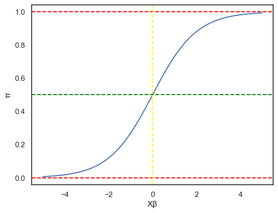
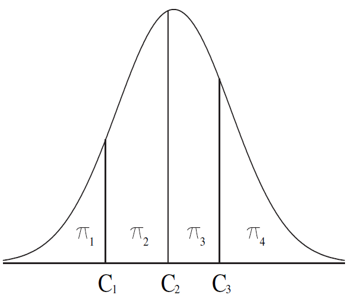

逻辑回归模型是广义线性回归中一个非常经典的模型，其架构在今天很多研究当中也在使用。由于逻辑回归模型中的响应变量是二分类随机变量，因此我们先从二分类随机变量开始讲起，逐步过渡到逻辑回归。
一、逻辑回归模型的建立
1.1 二分类随机变量与二项分布
二分类随机变量(Binary Random Variable)是指一个随机变量只取两个数，一般是0和1。二分类随机变量在实际生活中很常见，比如你可以用二分类随机变量描述一个人患病还是没患病：
Z={1,0,患病未病
根据概率论的知识我们知道，二分类随机变量是离散的随机变量，因此我们只能用分布律来描述，即：
| Z |
1 |
0 |
| Pr |
π |
1−π |
显然，Z服从二项分布（伯努利分布），记作Z∼B(1,π)，π=Pr(Z=1)。这里的π就可以相当于患病率。
进一步地，由于我们调查的人数不止1个，因此如果有n个人，每个人的患病状态均服从二项分布，那么这n个人患病状态的联合分布为：
Y=j=1∑nZj∼B(n,π)
即n次试验下的二项分布。那么不难发现，其概率密度函数为：
Pr(Y=y)=Cnyπy(1−π)n−y
其中Cny表示组合数。回顾一下，二项分布的期望是E=nπ，方差是Var=nπ(1−π)。
事实上，二项分布属于指数分布族，所以可以把二项分布的概率密度函数改写为指数分布族的通式形式，即：
exp[ylog(1−ππ)+nlog(1−π)+logCny]
1.2 联系函数的选择
确定了响应变量的分布之后，接下来应该选择联系函数。如果按照广义线性回归的定义，我们要找的就是：
g(EY)=Xβ
那么是否可以用EY呢？很遗憾，不能。我们已经知道，Y是指n个个体中“患病”的个数，那么EY就是某个π下期望的患病人数。如果两个样本组n1,n2的人数不同但π相同，那么最终的期望患病人数也不同，能说明这两组的患病率不同吗？肯定不能，因为基数不同，没有可比性。
为了使得各个组之间具有可比性，我们应该使用“期望患病率”，也就是π来建模，即：
g(EY/n)=g(π)=Xβ
那么选择什么样的联系函数呢？线性回归模型g(t)=t可以吗？当然不行。如果使用线性回归，那么π=Xβ，但是由于π∈[0,1]，而Xβ可以是小于0的，所以不成立。因此我们的目标是：找一个联系函数g()，对Xβ进行变换，使得最终求得的π压缩在[0,1]中。
经过统计学家的努力，有这样三种联系函数适合处理上述情况，它们对应的模型名称分别为：
- probit模型
- 逻辑回归/logistic回归模型
- log-log模型
逻辑回归模型是我们的重点，我们在1.3小节介绍。接下来我们简单了解一下另外两个模型。
首先是probit模型。probit模型的基本思想是把线性预测子映射到标准正态分布的累计分布值，即：
π=g−1(Xβ)=Φ(Xβ)
其中Φ表示标准正态分布的累计分布函数。
由于累计分布值在[0,1]之间，并且是S型的线性增长曲线，因此通过这个累积分布函数就能把线性预测子映射到[0,1]之间，此时联系函数就是标准正态分布累计分布函数的反函数，即g(π)=Φ−1(π)=Xβ。probit模型在计量经济学中应用广泛。
其次是log-log模型。log-log模型的基本思想是取：
πg(π)=g−1(Xβ)=1−e−eXβ=log[−log(1−π)]=Xβ
因为联系函数有两个log，所以称为log-log模型。该模型常出现在带有时间或风险含义的二分类情境中，比如描述 “某人是否在某时间点前发生事件”等。
1.3 逻辑回归及其参数估计
接下来就是广为人知的逻辑回归模型了。逻辑回归，即Logistic Regression，是一种基于对数几率关系的回归模型。“逻辑”一词其实是一个误译，并非是“logic(逻辑)”的含义，不过已经成为约定俗成的名词了。逻辑回归的基本思想是，取这样的联系函数：
πg(π)=g−1(Xβ)=1+eXβeXβ=log1−ππ=Xβ
这里的g(π)又被称为logit函数（逻辑函数），又称为对数几率(Logarithm of Odds)。
或许你对“对数几率”这个词很疑惑，这里我们解释一下。几率，即“odds”，用于描述一个事件成功概率与失败概率的比值，即：
odds=Pr(失败)Pr(成功)
在逻辑回归模型中，π就是成功率，1−π就是失败率，所以g(π)就可以很好地描述对数几率。因此，逻辑回归模型本质上是以对数几率为连续响应变量的线性回归模型。
为什么要使用逻辑函数作为联系函数呢？这里我们绘制π随Xβ变化（逻辑回归）的示意图：

可以看到，逻辑回归有如下特点：
- 值域在[0,1]之间，并且在无穷处趋近于边界值；
- 单调递增且平滑；
- 在中间区域增长迅速，而在两边区域增长缓慢；
- 在Xβ=0时取0.5，也就是没有任何信息的情况下概率取一半，符合认知。
这也是为什么逻辑回归如此出名，因为它的性质很优良，并且在很多领域已经成功实践。
搭建模型之后，我们就要对参数进行估计。第一步就是要写似然函数。在1.1小节我们已经把二项分布写成了指数分布族的形式，不过为了简化，我们根据自变量的取值分为N个组，每个组有ni个样本，其中患病个数为yi，且假定每个组均服从B(ni,πi)。此时对数似然函数可以写作：
l=i=1∑N[yilog(1−πiπi)+nilog(1−πi)+logCniyi]
为了更简洁，我们一般令θi=log1−πiπi，可以得到：
l(θ)=i=1∑N[yiθi−nilog(1+eθi)+logCniyi]
同时你会发现，g(πi)=θi。
这里使用分组只是为了书写简化，如果你要对每一个样本单独列方程，其实就是取N=n，ni=1，并且去掉后面的logCniyi，本质上是一样的。另外，分组可以在实际应用中表示“同一批次”这样的概念，相对来说更好一点。
根据上一讲所学的知识，我们可以求出得分统计量：
Uj=i=1∑N[Var(yi)yi−μixij∂(Xiβ)∂μi]=i=1∑N[niπ(1−πi)yi−niπixij∂(Xiβ)ni∂πi]=i=1∑N[niπ(1−πi)yi−niπixij(1+eXiβ)2nieXiβ]=i=1∑N[xij(yi−niπi)]
注意，这里的xij不再表示单个元素，而是第i组第j列这个列向量。
信息阵为：
Ijk=i=1∑NVar(yi)xijTxik(∂(XiTβ)∂μi)2=i=1∑Nniπi(1−πi)xijTxik(∂(Xiβ)ni∂πi)2=i=1∑Nniπi(1−πi)xijTxik(1+eXiβ)4ni2e2Xiβ=i=1∑NnixijTxikπi(1−πi)
之后就可以使用Fisher Scoring算法迭代求解，即：
I(m−1)bm=J(m−1)b(m−1)+U(m−1)
或者，我们可以直接使用IRWLS算法。先求工作变量：
Zi=Xiβ(m−1)+niπi(1−πi)yi−niπi
以及权重变量：
Wi=niπi(1−πi)
然后更新回归系数：
β(m)=(XTWX)−XTWZ
其中W=diag(W1,⋯,WN)，Z=(Z1,⋯,ZN)T。之后重复这个过程即可。
1.4 逻辑回归下游概念：几率比
在结束第一节之前，我们还需要补充一个概念，这个概念在公共卫生与临床统计方面非常重要，并且在逻辑回归中也有重要含义。我们先从一个案例说起。假设我们有如下数据：
|
患病人数 |
未病人数 |
总人数 |
| 吸烟 |
a |
b |
n1=a+b |
| 不吸烟 |
c |
d |
n2=c+d |
一个比较直观的问题是，吸烟会导致患病概率增加多少倍？一个显而易见的想法是，我们只需要分别求出吸烟者和不吸烟者中患病的比例，然后相除即可：
RR=c/n2a/n1
这个值在公共卫生领域被称为相对危险度(Relative Risk, RR)，相对危险度可以用于讨论某个因素对患病风险的影响。
另外一个想法是利用“几率”(odds)。我们分别求出吸烟人群和不吸烟人群中患病的“几率”，再相除，通过几率的变化反映患病的风险，即：
OR=(c/n2)/(d/n2)(a/n1)/(b/n1)=c/da/b
可以看到，分子分母都是“几率”，二者相除得到的值我们称为优几率比(Odds Ratio, OR)，即“几率之比”，这个概念在非常多的类似研究中都会频繁出现。
现在你一定在想，这俩到底有什么区别？不都是探讨吸烟对患病的影响吗？事实上，二者是有区别的，这种区别来自于上述表格是如何制作的：
- RR适用于队列研究：我们可以招募吸烟者和不吸烟者，并进行一定时间内的跟踪随访，随访完毕后统计患病个数。此时吸烟者和不吸烟者的总人数是固定的（横轴，理想情况），患病是跟踪随访期间出现的新事件，那么我们应该根据新事件出现的比例，即RR值，来判断吸烟是不是一个风险因素；
- OR适用于病例对照研究/回顾性研究：我们可以调查患病者的病史和生活习惯史，比如吸烟史。此时患病人数和不患病人数是固定的（纵轴），“吸烟”行为是通过调查发现的，那么我们应该根据风险因素在患病和不患病群体中的比例差异，即OR值，来判断吸烟是不是风险因素。
与RR值相比，OR值不受患病率的影响。如果短期内患病率偏高，那么RR值就会出现假阳性；另外，在病例对照研究中，计算RR值是没有意义的，因为此时的RR值的分子分母都不是代表患病率。
说了这么多，这些指标和逻辑回归有什么关系？当然有，逻辑回归模型中其实也存在一个OR值。别忘了，逻辑回归中有一个概率π，正好对应上面OR值的各个项：
OR=π2/(1−π2)π1/(1−π1)=eg(π2)eg(π1)
这个OR值和上面列联表算出来的OR值有什么区别？
区别就是，逻辑回归中的π是多因素拟合的结果，而不是简单的单因素的比例。所以在很多研究中，往往使用逻辑回归进行拟合，再计算OR值，用于病例对照研究。
你或许想举一反三，认为逻辑回归中的RR值就是π1/π2。这一点在数据完整时没有问题。但是，在实际的队列研究中，随访人有可能中途退出或后续加入，会形成删失(Censoring)数据，所以一般使用生存分析的方法来完成。这一点在后续专题中还会展开。
二、逻辑回归模型的检验和诊断
2.1 模型结构检验
对于广义线性回归模型来说，我们首先要检验的就是模型结构，即使用逻辑回归模型是否合理。要完成这个检验，需要先求出逻辑回归模型和全模型的对数似然，然后使用Deviance检验。
对于逻辑回归模型来说，其对数似然为：
l(θ)=i=1∑N[yiθi−nilog(1+eθi)+logCniyi]
并且在θi=θ^i时取得最大值。
对于全模型来说，其对数似然为：
l(ψ)=i=1∑N[yiψi−nilog(1+eψi)+logCniyi]
对于yi>0，ψi=log1−yi/niyi/ni=logni−yiyi时取得最大值；对于yi≤0，eψi=0时取得最大值。
所以我们构造Deviance：
D=2[l(ψ^)−l(θ^)]=2i=1∑N[yilog(ni−yi)π^i(1−π^i)yi+nilog(1−π^i)nini−yi]=2i=1∑N[yilogy^iyi+(ni−yi)logni−y^ini−yi]
其中y^i=niπ^i。
根据分布理论，Deviance应当渐进分布卡方分布，即：
D∼χN−p2
除了Deviance检验，这里再补充一种相对应的检验方式，称为最小模型检验(Minimal Model Test)，其基本假设是：相对于全模型，我们定义一个最小模型，参数为π=(∑yi)/(∑ni)，也就是以总体的频率来估计概率，每一水平的自变量对应的概率都一样。此时构造：
C=2[l(π^;y)−l(π;y)]=2∑[yilog(niπiy^i)+(ni−yi)log(ni−niπini−y^i)]
根据分布理论，C应当渐进分布卡方分布，即：
C∼χp−12
如果显著，说明模型结构是显著的，因为这些自变量会影响估计值。另外，C有时候又被称为似然比卡方统计量(Likelihood Ratio Chi-squared Statistic)。
事实上，这里的最小模型就相当于一般线性回归中的零模型（只包含截距项的模型）。
2.2 模型拟合优度检验
如果模型结构是成立的，那我们接下来就可以考察模型的拟合优度了。在一般线性回归中，我们使用决定系数来描述模型的拟合好坏，但是在逻辑回归中无法直接使用。这里我们提供三种方法：
Pearson卡方检验。卡方检验是统计学中的经典方法，用于判断列联表中理论值e和观测值o的符合程度，也就是检验：
X2=∑e(o−e)2∼χ2
那么类似的，我们可以把它应用到逻辑回归当中，即：
Sw=i=1∑Nniπi(yi−niπi)2+i=1∑Nni(1−πi)[(ni−yi)−ni(1−πi)]2=i=1∑Nniπi(1−πi)(yi−niπi)2∼χN−p2
因此，我们只需要构造Sw统计量进行检验，如果显著，说明理论与观测相差过大，拟合较差。
HL检验。HL检验是使用Hosmer和Lemeshow在1980年提出的Hosmer-Lemeshow统计量，其基本思想是，根据预测的π^i大小进行分组，假设我们分为g个组（一般是10组），那么每一组都统计患病个数的观测值和理论值，这样就构成了g×2的列联表，之后再计算这个列联表的Pearson卡方X2，此时X2∼χg−22。简单来说，就是绘制这样的列联表：
| π^ |
患病人数 |
未患病人数 |
| <m1 |
a(a∗) |
b(b∗) |
| m1~m2 |
c(c∗) |
d(d∗) |
| ⋯ |
⋯ |
⋯ |
| mg−2~mg−1 |
e(e∗) |
f(f∗) |
| >mg−1 |
g(g∗) |
h(h∗) |
其中第一列表示π^i的范围，后面两列中括号外为观测值，括号内为理论值，求这个列联表的卡方值即可。HL检验可以告诉你预测概率区间是否系统性偏高或偏低，消除了单个点的噪声影响，更加稳健。
伪决定系数。类比于一般线性回归的决定系数，McFadden定义了一个伪决定系数，即Pseudo R2：
McFadden′s Pseudo R2=1−l(π;y)l(π^;y)
其中π是2.1小节提到的最小模型的参数。Pseudo R2可以度量个体对响应值的预测能力，其值越高代表预测效果更好。但是这个统计量也有弊端：
- Pseudo R2的抽样分布无法确定，所以不方便计算p值；
- 模型参数越多，Pseudo R2越大，更容易出现假阳性。
尽管如此，很多软件和程序仍然使用McFadden定义的伪决定系数。
2.3 残差检验
类似于线性回归模型的诊断，我们也可以诊断逻辑回归模型的残差。逻辑回归模型的残差有两种——Pearson残差和Deviance残差，我们分别来看。
Pearson残差来源于2.2小节中的卡方检验统计量，即：
Xi=niπ^i(1−π^i)(yi−niπ^i),i=1,⋯,N
不难发现：
∑Xi2=Sw
进一步定义标准化的Pearson残差：
rP(i)=1−hiiXi
其中hii=X(XTX)−1XT是帽子矩阵的元素，这里的X是设计矩阵。
Deviance残差来源于Deviance统计量，即：
di=sign(yi−niπ^i)×2[yklog(nkπ^kyk)+(nk−yk)log(nk−nkπ^knk−yk)]
其中sign()是符号函数。
进一步定义标准化的Deviance残差：
rD(i)=1−hiidi
上述两种残差都可以用，比如你可以以y^i为横坐标，rP(i)为纵坐标绘制残差图。残差图的观察方法和之前线性回归的一致，只是逻辑回归的残差图有两条线，因为有的是和1比较，有的和0比较，两条线都应该散布而不具有趋势。
2.4 过度分散/过度离势检验
最后我们考虑逻辑回归中一个特殊的情况——过度分散/过度离势(over-dispersion)。
过度分散是指观测值的方差大于模型假设的二项分布方差，即：
Var(Yi)>niπi(1−πi)
等价于：
Var(π^i)>πi(1−πi)/ni
这样导致的问题是，模型无法完全解释或者拟合实际的方差，从而使得Deviance偏大，模型结构更容易通过检验，造成假阳性。简单来说，因为模型的解释不够充分，估计过于保守，使得模型很容易成立。
要诊断过度分散现象也很简单，只需看前面提到的所有验证过程，如果卡方值过大、残差图不理想、Deviance检验不通过等，基本可以认为是过度分散。造成过度分散的原因可能有：
- 自变量（解释变量）的选择出现遗漏；
- 联系函数的选择错误（模型结构不正确）；
- 观测值Yi之间并不相互独立。
要解决过度分散问题，首先要选择合适的自变量，进行筛选或衍生一些特征；其次是考虑使用合适的模型。如果我们确认要使用逻辑回归，但仍然存在过度分散，那么可以考虑定义响应变量的分布为拟二项分布(quasi-binomial)。拟二项分布的基本思想是，保持期望值表达式不变，引入额外参数ϕ，使得var(Yi)=niπi(1−πi)ϕ。此时对应的对数似然函数被称为拟对数似然函数，即：
Qi=∫niπiniπ^iniπi(1−πi)ϕyi−tdt
三、广义逻辑回归模型简介
前面我们介绍了逻辑回归的建立和诊断。逻辑回归基于“对数几率”这个联系函数，处理了二分类的响应变量。然而，分类变量不仅仅只有二分类，还会有以下两种情况：
- 多分类无序变量(名义变量，Nominal)：比如疾病的分型（α型/β型/γ型/Ω型）。
- 多分类有序变量(顺序变量，Ordinal)：比如问卷的满意程度（满意/一般/不满意）。
这两种情况也可以使用“对数几率”这种联系函数来处理，只不过需要一点改进，所以我们称之为广义逻辑回归模型。这里我们主要介绍建模的过程，参数估计和模型评价方法很大程度上与上述内容一致。
3.1 多分类无序变量下的逻辑回归
如果响应变量是多分类无序变量，那么我们应该假定响应变量服从多项分布。在预备知识中我们介绍过一次试验的多项分布，这里我们需要把它推广到n次多项分布。
设响应变量Y有k类，于是引入k−1个变量来描述属于各个类别的概率，即
π=(π1,⋯,πk−1)T
如果我们记∣π∣=∑i=1k−1πi，那么最后一类的概率就是1−∣π∣。另记第i个类分到的样本数为yi，且∣y∣=∑i=1k−1yi。因此，对于n次多项分布，其分布函数为：
f(y;n)=y1!⋯yk−1!(n−∣y∣)!n!π1y1⋯πk−1yk−1(1−∣π∣)n−∣y∣
我们已经知道多项分布是属于指数分布族的，那么我们以最后一类（即1−∣π∣）为参考类(Reference Category)，令：
θj=log1−∣π∣πj,πj=1+∑i=1k−1eθieθj,j=1,⋯,k−1
就可以改写为指数分布族的形式：
f(y∣θ,ϕ)=exp{θTy−b(θ)+c(y;ϕ)}
其中：
b(θ)=−nlog(1−∣π∣)=nlog(1+i=1∑k−1eθi)c(y;ϕ)=logy1!⋯yk−1!(1−∣y∣)!n!ϕ=1
验证一下：
EVarCov=∂θj∂b(θ)=1+∑i=1k−1eθineθj=nπi=∂θj∂θj∂2b(θ)=n(1+∑i=1k−1eθi)2eθj(1+∑i=1k−1eθi−eθj)=nπj(1−πj)=∂θj∂θk∂2b(θ)=(1+∑i=1k−1eθi)2−neθjeθk=−nπjπk
接下来我们就可以建立多分类无序变量下的逻辑回归模型了，即Nominal逻辑回归。类似于一般的逻辑回归模型，我们取每一个类与参考类之间的对数几率为联系函数，即：
g(πj)=log1−∣π∣πj=Xjβj=θj
其中βj=(β1j,⋯,βpj)T，p为自变量个数。
3.2 多分类有序变量下的逻辑回归
接下来我们考虑多分类有序变量下的逻辑回归模型。由于这些分类变量是有顺序的，因此我们可以引入一些隐变量(Latent Variable)作为截值(cutoff)。对于k个有序类别，我们引入k−1个截值Cj，例如，下图展示了4个类别插入3个截值的情况：

引入截值后，有多种方法可以进行建模，这里介绍三种常用的：
- 比例几率模型（Proportional Odds Model, PO）
- 相邻类别模型（Adjacent Categories Model, AC）
- 连续比例模型（Continuation Ratio Model, CR）
比例几率模型。如果令∣π∣j=∑i=1jπi，那么取：
g(πj)=log1−∣π∣j∣π∣j=Xjβj
也就是说，我们取Cj之前的所有分类为研究对象，Cj之后的所有分类为参考类，建立模型。
比例几率模型有两个特点：
- 可压缩性(collapsibility)：如果有类别发生了合并，并不会影响参数估计（只是改变了常数项）。
- 符号无序性：如果类别的标记完全反过来，也不影响参数估计的结果，只是符号表示需要更换。
相邻类别模型。相邻类别顾名思义，就是要把前后类别进行比较，即取：
g(πj)=logπj+1πj=Xjβj
连续比例模型。我们取：
g(πj)=logπj∣π∣j−1=Xjβj
或者取：
g(πj)=log1−∣π∣jπj=Xjβj
最后一个问题是，如何选择这三种模型？下面给出一点建议：
- PO模型：关注累积概率，例如分析年龄、性别对癌症分期（I/II/III/IV 期）的影响，关注的是患癌不超过II期的概率。
- AC模型：关注相邻等级的比较，例如分析收入对满意度（不满意 / 一般 / 满意）的影响，关注的是“一般”与“不满意”、“满意”与“一般”的差异是否受收入影响。
- CR模型：关注等级间的转换概率，例如分析治疗方案对疾病进展（无病→轻度→重度）的影响，关注的是从无病转轻度的概率、从轻度转重度的概率。